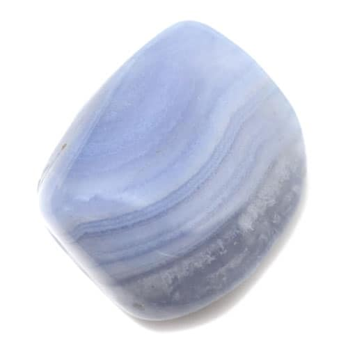

Blue Lace Agate Associations
- Candle Colour: Pale blue
- Chakra: Throat
- Element: Air/water
- Flowers + Plants: Bluebell, Forget-me-not, Periwinkle
- Herbs/Incense/Oils: Fern, Star Anise, Vervain, Yarrow
- Planet: Neptune
- Zodiac: Aquarius
Blue Lace Agate Properties and Uses
- Animals: Helps with noisy domestic animals
- Children: Soothes restless children
- Environment: Use to send peace energy to warzones
- Health/Healing: Good for headaches, sore throats, sowllen neck glands. Calms stress and soothes skin conditions
- Home: a Peacemaker, helps avoid confrontation at family gatherings
- Protection: Protective against anger from others
- Pyschic: Helps develop clairaudience and positively boost difficult divination readings
- Work: Helps you think on your feet when giving speeches
Credit